Finike
Finike
Finike Photos
- 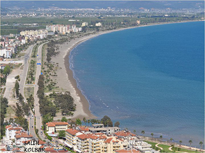Finike
General Landspace Finike from 1990s - 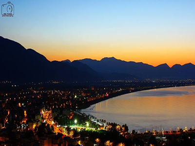Finike Sunset
This picture from Finike Sunset. - 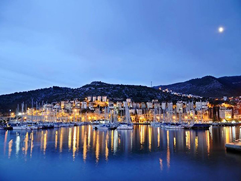Finike Marina Sunset
This picture from Finike Marina Sunset. - 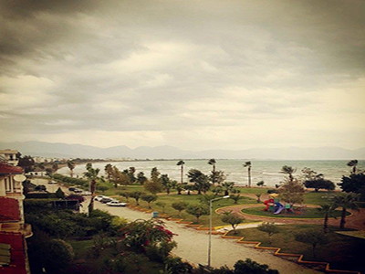Cloudy Finike
A Cloudy Finike Day - 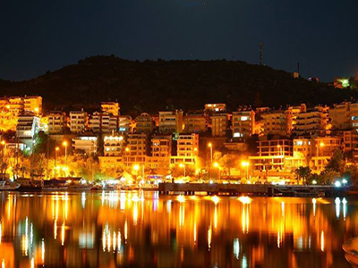Finke Night
General Finike Nights  Andredoria
Andredoria
Finike Andredoria Sea- 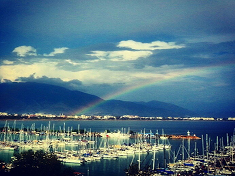Rainbow
Finike Marina and Rainbow - 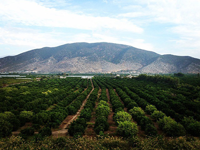Oranges
Finike Orange Garden - 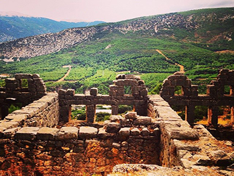Myra.
Historical part of Finike - 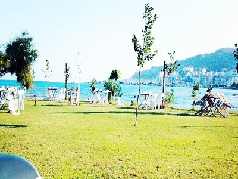Cafe
Finike Cafeteries - 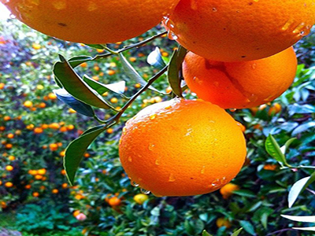Orange
Popular Finike's Oranges.  Landspace.
Landspace.
Finike Landspace.- 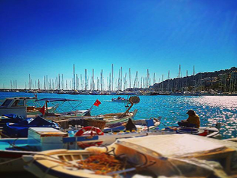Fishing.
Finike Fishing. - 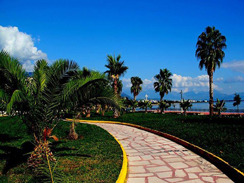Mendirek.
Finike Famous Street Mendirel. - 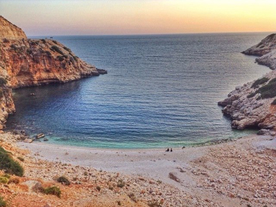Beach.
Ordinary Finike's Beach.  Mendirek.
Mendirek.
Finike Mendirek- 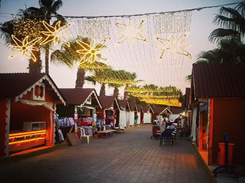Holiday.
Holiday in Finike. - 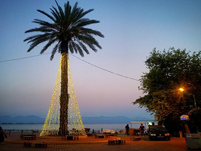Mendirek.
Finike Mendirek. - 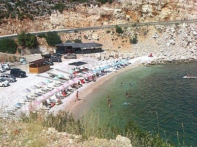Cirali.
Finike Cirali Beach. - 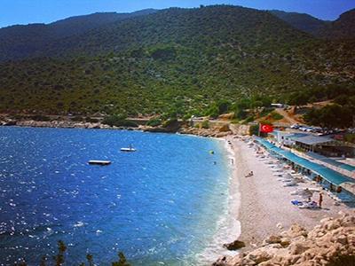Gokliman
inike Gokliman Beach. - 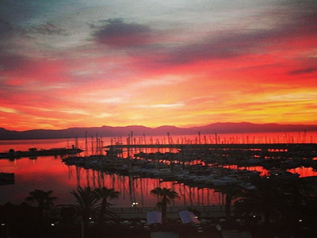Marina Sunset.
Finike Marina Sunset. - 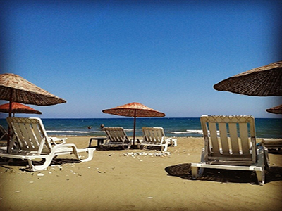Finike Beahcs.
Finike Beahcs. - 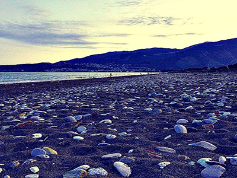Finike Beachs.
Finike Beahcs. - 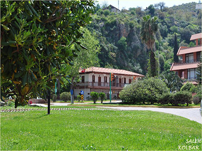Finike.
Finike Culture House.  Finike.
Finike.
Finike.
Back the photo gallery